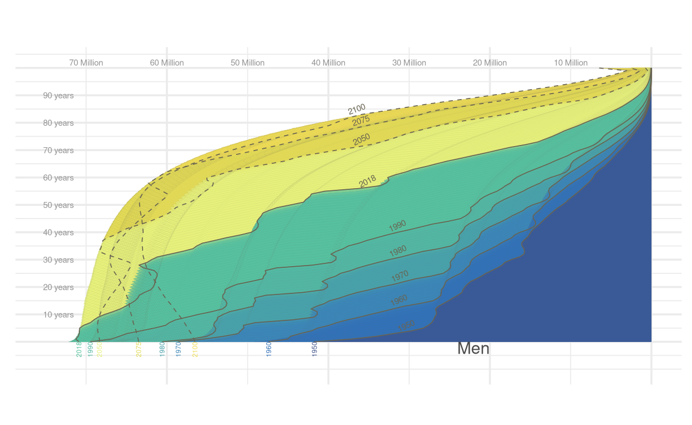

Introduction
In 1950, the world population was 2.5 billion people. Since then, it has experienced significant growth, currently exceeding 8 billion. According to United Nations projections, the global population is expected to reach approximately 10.4 billion by the end of the century. This visualization of the population pyramid provides a clearer view of how the demographic composition has evolved and will continue to evolve in the coming decades, as it allows us to observe the age and gender distribution, highlighting changes over time.
The original graph

Figure 1: The original graph
The selected graph is available in Our World in data. Elements to note about the graph and the composition of the world population are as follows:
The width represents the size of the population of a given age; females on the right and males on the left. The bottom layer represents the number of newborns and, above it, are the numbers of the older cohorts.
In darker blue, the pyramid representing the structure of the world population in 1950 can be seen. Particularly noteworthy is the increase in the number of births, which widened the base of the pyramid, and the high lifetime risk of death, which is evident because the pyramid narrows toward the top. There were many newborns relative to the number of people at older ages.
Through shades of blue and green, the same visualization shows the population structure over the last decades up to 2018. It can be seen that in each subsequent decade, the population pyramid widened, i.e. in each decade the total number of people of all ages increased.
Replication work
Packages
Getting the data
data <- readxl::read_excel("data.xlsx")Preparing the data
We are faced with a dataset where information on the ages of individuals is presented in a scattered manner, with each age group located in a separate column. This structure can be challenging for efficient analysis and visualization of the information. To address this situation, the pivot_longer() function of the tidyverse package is used. This operation allows the data to be rearranged so that the ages, originally represented as separate columns, are stacked into a single column called “Age”.
Once the data is in the desired format, I make sure that there are no NA
data2 <- data |>
pivot_longer(cols = c(2:102),
names_to = "Age",
values_to = "population")
if (any(!complete.cases(data2))) {
print("There are any NA.")
} else {
print("There are not any NA")
}[1] "There are not any NA"Since to replicate the original graph I have to make two separate graphs (one for the male population and one for the female population) I filter the dataframe according to gender, and create a different data set for each gender.
Building the graph
First, I create a vector containing the years that the authors of the original chart highlight with thicker lines and dashed lines.
Subsequently, this vector will allow me to create 3 layers:
The first one for all years from 1950 to 2100.
The second for selected years that are actual observations (1950, 1960, 1970, 1980, 1990 and 2018) which have a thicker line.
The third one, for the selected years that are projections (2050, 2075 and 2100) with lines of the same thickness as the years of the second layer, but with a dashed line.
Then, after numerous attempts, the ingenious solution to apply the exact color to the area between the lines delineating the profiles of each year in the population pyramid was to create a vector in which the sequence of each element corresponds directly and precisely to the years (once the color palette was inverted). By establishing a 1:1 correspondence between each color and the area between the lines that draw the profile of each year, I can assign a color to each of the 150 areas to be colored.
selected_years <- c(1950, 1960, 1970, 1980, 1990, 2018, 2050, 2075, 2100)
color_paleta <- c(
"#3E5189",
rep("#3371B7", times = 10),
rep("#3B86B7", times = 10),
rep("#48A0AA", times = 10),
rep("#52B6A3", times = 10),
rep("#57C09F", times = 28),
rep("#E6F07C", times = 32),
rep("#E2DB56", times = 25),
rep("#EFDD56", times = 25)
)
color_paleta_invertido <- rev(color_paleta)Female population
I use geom_area to display stacked areas representing the distribution of the female population over time. geom_line adds lines with specific settings to highlight selected observations and additional projections. The coord_flip function inverts the x and y axes to enhance the display of the area plot. In addition, geom_text is used to manually add labels and the values of both axes.
plot_female <- ggplot(data_female, aes(x = Age, y = population, fill = forcats::fct_rev(Year))) +
geom_area(position = "identity", alpha = 0.7) +
geom_line(aes(color = "NotSelected", linetype = "NotSelected"),
alpha = 0.1, size = 0.1) +
geom_line(data = subset(data_female, Year %in% c(1950, 1960, 1970, 1980, 1990, 2018)),
aes(color = "Selected", linetype = "Selected"),
alpha = 1, size = 0.3, linetype = "solid") +
geom_line(data = subset(data_female, Year %in% c(2050, 2075, 2100)),
aes(color = "AdditionalSelected", linetype = "AdditionalSelected"),
alpha = 1, size = 0.3, linetype = "dashed") +
coord_flip() +
theme_minimal(base_size = 14) +
theme(legend.position = "none", plot.title = element_text(hjust = 0.5, size = 19, face = "bold"),
axis.text.y = element_blank(), axis.title.y = element_blank(), axis.text.x = element_blank()) +
scale_x_continuous(breaks = seq(0, 100, by = 10), limits = c(-10, 102)) +
scale_fill_manual(values = color_paleta_invertido) +
scale_color_manual(values = c("NotSelected" = "#686351", "Selected" = "#686351", "AdditionalSelected" ="#686351")) +
scale_linetype_manual(values = c("NotSelected" = "solid", "Selected" = "solid", "AdditionalSelected" = "dashed")) +
geom_text(data = data.frame(x = 9.94307173536714, y = 28511.2785548616, label = "1950"),
mapping = aes(x = x, y = y, label = label),
size = 2, angle = -14L, hjust = 0.3, vjust = 1L,color = "#686351", inherit.aes = FALSE)+
geom_text(data = data.frame(x = 18.0412115460575, y = 26490.5928372464, label = "1960"),
mapping = aes(x = x, y = y, label = label),
size = 2, angle = -14L, color = "#686351", inherit.aes = FALSE) +
geom_text(data = data.frame(x = 29.1943328380169, y = 25480.2499784388 , label = "1970"),
mapping = aes(x = x, y = y, label = label),
size = 2, angle = -14L, hjust = 0.4, vjust = 1L, color = "#686351",inherit.aes = FALSE) +
geom_text(data = data.frame(x = 39.238472992214, y = 25143.4690255029, label = "1980"),
mapping = aes(x = x, y = y, label = label),
size = 2, angle = -14L, vjust = 1L,color = "#686351", inherit.aes = FALSE) +
geom_text(data = data.frame(x = 49.6413296030791, y = 23571.8245784689, label = "1990"),
mapping = aes(x = x, y = y, label = label),
size = 2, angle = -14L, hjust = 0.35, vjust = 1L, color = "#686351", inherit.aes = FALSE)+
geom_text(data = data.frame(x = 57.6527237837525, y = 40000, label = "2018"),
mapping = aes(x = x, y = y, label = label),
size = 2,angle = -14L, hjust = 1L, vjust = 0.35, color = "#686351", inherit.aes = FALSE) +
geom_text(data = data.frame(x = 75.5416978407678, y = 37941.145237066, label = "2050"),
mapping = aes(x = x, y = y, label = label),
size = 2, angle = -12L, hjust = 0.45, vjust = 0.65, color = "#686351", inherit.aes = FALSE) +
geom_text(data = data.frame(x = 82.5215256568887, y = 38165.6658723566, label = "2075"),
mapping = aes(x = x, y = y, label = label),
size = 2, angle = -13L, hjust = 0.25, vjust = 0.8,color = "#686351", inherit.aes = FALSE)+
geom_text(data = data.frame(x = 87.3963251911341, y = 39400.5293664547, label = "2100"),
mapping = aes(x = x, y = y, label = label),
size = 2, angle = -14L, vjust = 1L,color = "#686351", inherit.aes = FALSE) +
geom_text(data = data.frame(x = 0, y = 40000, label = "1950"),
mapping = aes(x = x, y = y, label = label),
size = 1.6, angle = -90L, hjust = 0, vjust = 0.8, color = "#3E5189", inherit.aes = FALSE) +
geom_text(data = data.frame(x = 0, y =45500, label = "1960"),
mapping = aes(x = 0, y = y, label = label),
size = 1.6, angle = -90L, hjust = 0, vjust = 0.8, color = "#3371B7", inherit.aes = FALSE) +
geom_text(data = data.frame(x = 0, y = 57567.0830381612, label = "1980"),
mapping = aes(x = x, y = y, label = label),
size = 1.6, angle = -90L, hjust = 0, vjust = 0.8, color = "#48A0AA",inherit.aes = FALSE)+
geom_text(data = data.frame(x = 0, y = 55560.22486, label = "1970"),
mapping = aes(x = x, y = y, label = label),
size = 1.6, angle = -90L, hjust = 0, vjust = 0.8, color = "#3B86B7", inherit.aes = FALSE) +
geom_text(data = data.frame(x = 0, y = 65296.5630636051, label = "1990"),
mapping = aes(x = x, y = y, label = label),
size = 1.6, angle = -90L, hjust = 0, vjust = 0.8, color = "#52B6A3", inherit.aes = FALSE) +
geom_text(data = data.frame(x = 0, y = 65900.4237224363, label = "2050"),
mapping = aes(x = x, y = y, label = label),
size = 1.6, angle = -90L, hjust = 0, vjust = 0.8, color = "#E6F07C", inherit.aes = FALSE) +
geom_text(data = data.frame(x = 0, y = 61007, label = "2075"),
mapping = aes(x = x, y = y, label = label),
size = 1.6, angle = -90L, hjust = 0, vjust = 0.8, color = "#E2DB56", inherit.aes = FALSE) +
geom_text(data = data.frame(x = 0, y = 54350.0899600451, label = "2100"),
mapping = aes(x = x, y = y, label = label),
size = 1.6, angle = -90L, hjust = 0, vjust = 0.8, color = "#EFDD56", inherit.aes = FALSE) +
geom_text(data = data.frame(x = 0, y = 66861.9360283455, label = "2018"),
mapping = aes(x = x, y = y, label = label),
size = 1.6, angle = -90L, hjust = 0, vjust = 0.8, color = "#57C09F", inherit.aes = FALSE) +
geom_text(data = data.frame(x =0 , y = 29857.4288547544, label = "Women"),
mapping = aes(x = x, y = y, label = label),
size = 4, hjust =1L, vjust = 1L, color = "#4B4B4B", inherit.aes = FALSE) +
geom_text(data = data.frame(x = 25 , y = 65700, label = "Median Age in 1950:"),
mapping = aes(x = x, y = y, label = label),
size = 1.2, hjust = 0L, vjust = 0.75, color = "#A3A3A3", inherit.aes = FALSE) +
geom_text(data = data.frame(x = 23.6 , y = 65700, label = "23.6 years"),
mapping = aes(x = x, y = y, label = label),
size = 1.2, hjust = 0L, vjust = 0.75, color = "#A3A3A3", inherit.aes = FALSE) +
geom_text(data = data.frame(x = 31.4 , y = 65700, label = "Median Age in 2018:"),
mapping = aes(x = x, y = y, label = label),
size = 1.2, hjust = 0L, vjust = 0.75, color = "#A3A3A3", inherit.aes = FALSE) +
geom_text(data = data.frame(x = 30 , y = 65700, label = "30 years"),
mapping = aes(x = x, y = y, label = label),
size = 1.2, hjust = 0L, vjust = 0.75, color = "#A3A3A3", inherit.aes = FALSE) +
geom_text(data = data.frame(x = 37.5 , y = 65700, label = "Median Age in 2050:"),
mapping = aes(x = x, y = y, label = label),
size = 1.2, hjust = 0L, vjust = 0.75, color = "#A3A3A3", inherit.aes = FALSE) +
geom_text(data = data.frame(x = 36.1 , y = 65700, label = "36.1 years"),
mapping = aes(x = x, y = y, label = label),
size = 1.2, hjust = 0L, vjust = 0.75, color = "#A3A3A3", inherit.aes = FALSE) +
geom_text(data = data.frame(x = 40.4 , y = 65700, label = "Median Age in 2075:"),
mapping = aes(x = x, y = y, label = label),
size = 1.2, hjust = 0L, vjust = 0.75, color = "#A3A3A3", inherit.aes = FALSE) +
geom_text(data = data.frame(x = 39 , y = 65700, label = "39 years"),
mapping = aes(x = x, y = y, label = label),
size = 1.2, hjust = 0L, vjust = 0.75, color = "#A3A3A3", inherit.aes = FALSE) +
geom_text(data = data.frame(x = 44.4 , y = 65700, label = "Median Age in 2100:"),
mapping = aes(x = x, y = y, label = label),
size = 1.2, hjust = 0L, vjust = 0.75, color = "#A3A3A3", inherit.aes = FALSE) +
geom_text(data = data.frame(x = 43 , y = 65700, label = "41.6 years"),
mapping = aes(x = x, y = y, label = label),
size = 1.2, hjust = 0L, vjust = 0.75, color = "#A3A3A3", inherit.aes = FALSE) +
geom_text(data = data.frame(x = 102, y = 10000, label = "10 Million"),
mapping = aes(x = x, y = y, label = label),
size = 2, color = "#949494", inherit.aes = FALSE)+
geom_text(data = data.frame(x = 102, y = 20000, label = "20 Million"),
mapping = aes(x = x, y = y, label = label),
size = 2, color = "#949494", inherit.aes = FALSE)+
geom_text(data = data.frame(x = 102, y = 30000, label = "30 Million"),
mapping = aes(x = x, y = y, label = label),
size = 2, color = "#949494", inherit.aes = FALSE)+
geom_text(data = data.frame(x = 102, y = 40000, label = "40 Million"),
mapping = aes(x = x, y = y, label = label),
size = 2, color = "#949494", inherit.aes = FALSE)+
geom_text(data = data.frame(x = 102, y = 50000, label = "50 Million"),
mapping = aes(x = x, y = y, label = label),
size = 2, color = "#949494", inherit.aes = FALSE)+
geom_text(data = data.frame(x = 102, y = 60000, label = "60 Million"),
mapping = aes(x = x, y = y, label = label),
size = 2, color = "#949494", inherit.aes = FALSE)+
geom_text(data = data.frame(x = 102, y = 70000, label = "70 Million"),
mapping = aes(x = x, y = y, label = label),
size = 2, color = "#949494", inherit.aes = FALSE)+
labs(title = "", x = "", y = "", fill = "Año", color = "Línea destacada", linetype = "Discontinuity")
print(plot_female)Male population
The procedure to make this graph is the same as the one used to make the graph with the female data
plot_male <- ggplot(data_male, aes(x = Age, y = -population, fill = forcats::fct_rev(Year))) +
geom_area(position = "identity", alpha = 0.7) +
geom_line(aes(color = "NotSelected", linetype = "NotSelected"),
alpha = 0.1, size = 0.1) +
geom_line(data = subset(data_male, Year %in% c(1950, 1960, 1970, 1980, 1990, 2018)),
aes(color = "Selected", linetype = "Selected"),
alpha = 1, size = 0.3, linetype = "solid") +
geom_line(data = subset(data_male, Year %in% c(2050, 2075, 2100)),
aes(color = "AdditionalSelected", linetype = "AdditionalSelected"),
alpha = 1, size = 0.3, linetype = "dashed") +
coord_flip() +
theme_minimal(base_size = 14) +
theme(legend.position = "none", plot.title = element_text(hjust = 0.5, size = 19, face = "bold"),
axis.text.y = element_blank(), axis.title.y = element_blank(), axis.text.x = element_blank()) +
scale_x_continuous(breaks = seq(0, 100, by = 10), limits = c(-10, 102)) +
scale_y_continuous(limits = c(-75000, 0)) +
scale_fill_manual(values = color_paleta_invertido) +
scale_color_manual(values = c("NotSelected" = "#686351", "Selected" = "#686351", "AdditionalSelected" = "#686351")) +
scale_linetype_manual(values = c("NotSelected" = "solid", "Selected" = "solid", "AdditionalSelected" = "dashed")) +
geom_text(data = data.frame(x = 6.18998544147173, y = -30320.5198591813, label = "1950"),
mapping = aes(x = x, y = y, label = label),
size = 2, angle = 24L, hjust = 0.55, vjust = 0.6, color = "#686351", inherit.aes = FALSE) +
geom_text(data = data.frame(x = 14.2745633982306, y = -31880.6425658543, label = "1960"),
mapping = aes(x = x, y = y, label = label),
size = 2, angle = 24L, hjust = 0.2, vjust = 0.45, color = "#686351", inherit.aes = FALSE) +
geom_text(data = data.frame(x = 23.7762261259231, y = -31368.3552619391, label = "1970"),
mapping = aes(x = x, y = y, label = label),
size = 2,angle = 24L, hjust = 0.4,color = "#686351", inherit.aes = FALSE) +
geom_text(data = data.frame(x = 33.7651553067948, y = -31496.4270879179, label = "1980"),
mapping = aes(x = x, y = y, label = label),
size =2, angle = 24L, vjust = 0.8,color = "#686351", inherit.aes = FALSE) +
geom_text(data = data.frame(x = 41.8050242512531, y = -31624.4989138967, label = "1990"),
mapping = aes(x = x, y = y, label = label),
size = 2, angle = 24L, hjust = 0.40, vjust = 0.35, color = "#686351", inherit.aes = FALSE) +
geom_text(data = data.frame(x = 58.8592950465282, y = -35210.5100413027, label = "2018"),
mapping = aes(x = x, y = y, label = label),
size= 2, angle = 27L, hjust = 0.5, vjust = 0.6, color = "#686351",inherit.aes = FALSE) +
geom_text(data = data.frame(x = 72.8681580025912, y = -36107.0128231542, label = "2050"),
mapping = aes(x = x, y = y, label = label),
size = 2, angle = 25L, hjust = 0.35, vjust = 0.15, color = "#686351", inherit.aes = FALSE) +
geom_text(data = data.frame(x = 80.7862113793117, y = -35978.9409971755, label = "2075"),
mapping = aes(x = x, y = y, label = label),
size = 2, angle = 18L, color = "#686351", inherit.aes = FALSE) +
geom_text(data = data.frame(x = 85.6268864011455, y = -36812.4166584925, label = "2100"),
mapping = aes(x = x, y = y, label = label),
size = 2, angle = 20L, hjust = 0.4, vjust = 0.9, color = "#686351", inherit.aes = FALSE)+
geom_text(data = data.frame(x = 0.0540647418287934, y = -41737.516021589, label = "1950"),
mapping = aes(x = x, y = y, label = label),
size = 1.6, angle = 90L, hjust = 1L,color = "#3E5189", inherit.aes = FALSE) +
geom_text(data = data.frame(x = 0, y =-47403, label = "1960"),
mapping = aes(x = 0, y = y, label = label),
size = 1.6, angle = 90L, hjust = 1L, color = "#3371B7", inherit.aes = FALSE) +
geom_text(data = data.frame(x = 0, y = -60601, label = "1980"),
mapping = aes(x = x, y = y, label = label),
size = 1.6, angle = 90L, hjust = 1L, color = "#48A0AA", inherit.aes = FALSE)+
geom_text(data = data.frame(x = 0, y = -58589, label = "1970"),
mapping = aes(x = x, y = y, label = label),
size = 1.6, angle = 90L, hjust = 1L,color = "#3B86B7", inherit.aes = FALSE) +
geom_text(data = data.frame(x = 0, y = -69485, label = "1990"),
mapping = aes(x = x, y = y, label = label),
size = 1.6, angle = 90L, hjust = 1L,color = "#52B6A3", inherit.aes = FALSE) +
geom_text(data = data.frame(x = 0, y = -68360, label = "2050"),
mapping = aes(x = x, y = y, label = label),
size = 1.6, angle = 90L, hjust = 1L,color = "#E6F07C", inherit.aes = FALSE) +
geom_text(data = data.frame(x = 0, y = -63507, label = "2075"),
mapping = aes(x = x, y = y, label = label),
size = 1.6, angle = 90L, hjust = 1L, color = "#E2DB56", inherit.aes = FALSE) +
geom_text(data = data.frame(x = 0, y = -56524, label = "2100"),
mapping = aes(x = x, y = y, label = label),
size = 1.6, angle = 90L, hjust = 1L, color = "#EFDD56", inherit.aes = FALSE) +
geom_text(data = data.frame(x = 0, y = -70891, label = "2018"),
mapping = aes(x = x, y = y, label = label),
size = 1.6, angle = 90L, hjust = 1L,color = "#57C09F", inherit.aes = FALSE) +
geom_text(data = data.frame(x =0 , y = -20000, label = "Men"),
mapping = aes(x = x, y = y, label = label),
size = 4, hjust =1L, vjust = 1L, color = "#4B4B4B", inherit.aes = FALSE) +
geom_text(data = data.frame(x = 102, y = -10000, label = "10 Million"),
mapping = aes(x = x, y = y, label = label),
size = 2, color = "#949494", inherit.aes = FALSE)+
geom_text(data = data.frame(x = 102, y = -20000, label = "20 Million"),
mapping = aes(x = x, y = y, label = label),
size = 2, color = "#949494", inherit.aes = FALSE)+
geom_text(data = data.frame(x = 102, y = -30000, label = "30 Million"),
mapping = aes(x = x, y = y, label = label),
size = 2, color = "#949494", inherit.aes = FALSE)+
geom_text(data = data.frame(x = 102, y = -40000, label = "40 Million"),
mapping = aes(x = x, y = y, label = label),
size = 2, color = "#949494", inherit.aes = FALSE)+
geom_text(data = data.frame(x = 102, y = -50000, label = "50 Million"),
mapping = aes(x = x, y = y, label = label),
size = 2, color = "#949494", inherit.aes = FALSE)+
geom_text(data = data.frame(x = 102, y = -60000, label = "60 Million"),
mapping = aes(x = x, y = y, label = label),
size = 2, color = "#949494", inherit.aes = FALSE)+
geom_text(data = data.frame(x = 102, y = -70000, label = "70 Million"),
mapping = aes(x = x, y = y, label = label),
size = 2, color = "#949494", inherit.aes = FALSE)+
geom_text(data = data.frame(x = 10, y = -73400, label = "10 years"),
mapping = aes(x = x, y = y, label = label),
size = 2, color = "#949494", inherit.aes = FALSE) +
geom_text(data = data.frame(x = 20, y = -73400, label = "20 years"),
mapping = aes(x = x, y = y, label = label),
size = 2, color = "#949494", inherit.aes = FALSE)+
geom_text(data = data.frame(x = 30, y = -73400, label = "30 years"),
mapping = aes(x = x, y = y, label = label),
size = 2, color = "#949494", inherit.aes = FALSE) +
geom_text(data = data.frame(x = 40, y = -73400, label = "40 years"),
mapping = aes(x = x, y = y, label = label),
size = 2, color = "#949494", inherit.aes = FALSE)+
geom_text(data = data.frame(x = 50, y = -73400, label = "50 years"),
mapping = aes(x = x, y = y, label = label),
size = 2, color = "#949494", inherit.aes = FALSE)+
geom_text(data = data.frame(x = 60, y = -73400, label = "60 years"),
mapping = aes(x = x, y = y, label = label),
size = 2, color = "#949494", inherit.aes = FALSE)+
geom_text(data = data.frame(x = 70, y = -73400, label = "70 years"),
mapping = aes(x = x, y = y, label = label),
size = 2, color = "#949494", inherit.aes = FALSE)+
geom_text(data = data.frame(x = 80, y = -73400, label = "80 years"),
mapping = aes(x = x, y = y, label = label),
size = 2, color = "#949494", inherit.aes = FALSE)+
geom_text(data = data.frame(x = 90, y = -73400, label = "90 years"),
mapping = aes(x = x, y = y, label = label),
size = 2, color = "#949494", inherit.aes = FALSE)+
labs(title = "", x = "", y = "", fill = "Año", color = "Línea destacada", linetype = "Discontinuity")
print(plot_male)
Combined
Once both graphs have been made, I proceed to join them. Using the draw_plot and draw_text function of ggdraw I manually adjust the position of each plot and manually include the title, subtitle and the source of the data.
combined_plot <- ggdraw() +
draw_plot(
plot_male + theme(panel.grid = element_blank()) +
geom_hline(yintercept = 0, color = "black", size = 0.2, linetype = "solid", alpha = 0.2),
x = 0.04, y = 0, width = 0.5, height = 1
) +
draw_plot(
plot_female + theme(axis.text.y = element_blank(), panel.grid = element_blank()) +
geom_hline(yintercept = 0, color = "black", size = 0.2, linetype = "solid", alpha = 0.2),
x = 0.46, y = 0, width = 0.5, height = 1
) +
draw_text(
"The Demography of the World Population from 1950 to 2100",
x = 0.5, y = 0.96, size = 12, vjust = 0, hjust = 0.5, color = "#474747",
family = "Times New Roman"
) +
draw_text(
"Shown is the age distribution of the world population - by sex - from 1950 to 2018 and the UN Population Division's projection until 2100.",
x = 0.5, y = 0.93, size = 5, vjust = 0, hjust = 0.5, color = "#585858",
fontface = "italic"
) +
draw_text(
"Data source: United Nations Population, Division - World Population Prospects 2017; Medium Variant.
The data visualization is available at OurWorldinData.org. where you find more research on how the world is changing and why.",
x = 0.3, y = 0.02, size = 6, vjust = 0, hjust = 0.5, color = "#C9C9C9"
)
print(combined_plot)Alternative graph
Given that the original graph is comprehensive and aesthetically appealing, improving both its visual and informational quality proves challenging. Therefore, a viable alternative is to explore the inclusion of an additional graph that provides complementary information on the evolution of the world population.
In this way, incorporating the evolution of the population difference between men and women in demographic analysis offers a detailed and specific perspective, enriching the understanding of how the demographic composition has changed over time. This approach allows for the identification of specific patterns in the population difference between genders over the decades, enabling us to observe how demographic dynamics have evolved in relation to gender.
Constructing the new interest variable
I calculate for each age group and each year, the difference between the total number of men and women.
Thus, if the difference is positive, the result indicates that the number of males is greater, and if the result is negative, the number of females is greater than the number of males.
Time series evolution of the difference between the number of men and women
plot_diff <- ggplot(df_diff, aes(x = Age, y = population_diff, color = as.factor(Year))) +
geom_line(size = 0.8) +
labs(title = "Differences between men and women (1950-2100)",
x = "Age",
y = "Men population - Women Population",
color = "Age") +
scale_color_manual(values = c("1950" = "#3E5189", "1980" = "#48A0AA",
"2018" = "#57C09F", "2050" = "#E6F07C",
"2075" = "#E2DB56", "2100"= "#EFDD56" )) +
theme_minimal()
plot_diff <- plot_diff + annotate("segment", x = 50, xend = 50, y = 250, yend= 4000)
plot_diff<- plot_diff + geom_text(data = data.frame(x = 50, y = 4600, label = "Male population > Female population"),
mapping = aes(x = x, y = y, label = label),
size = 2, color = "black", inherit.aes = FALSE)
plot_diff <- plot_diff + annotate("segment", x = 50, xend = 50, y = -250, yend= -4000)
plot_diff<- plot_diff + geom_text(data = data.frame(x = 50, y = -4600, label = "Female population > Male population"),
mapping = aes(x = x, y = y, label = label),
size = 2, color = "black", inherit.aes = FALSE)
print(plot_diff)Doing the graph interactive
Using the ggplotly function of the plotly library, we allow the graph to be interactive and give us the exact value of the difference between the number of men and women for a given age if we place the computer cursor over the year in which we are interested.
plotly::ggplotly(plot_diff)